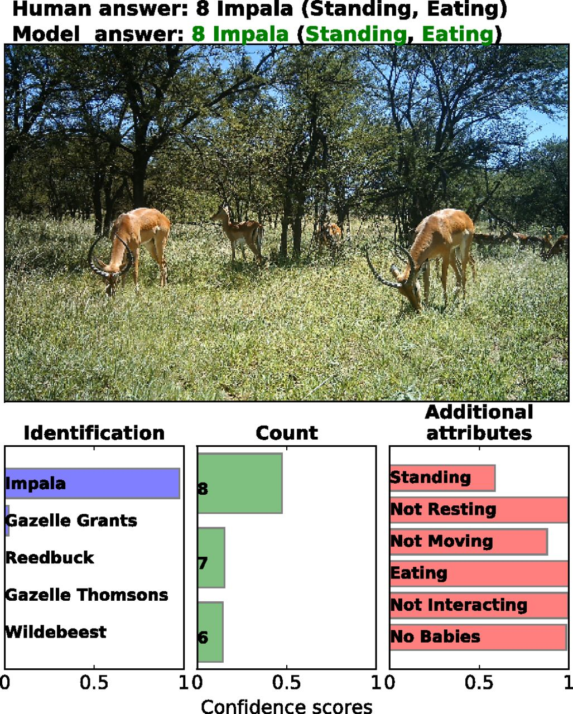
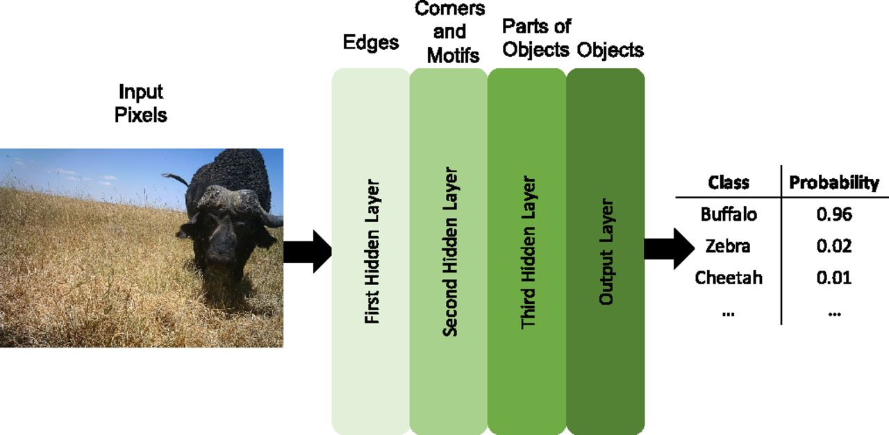
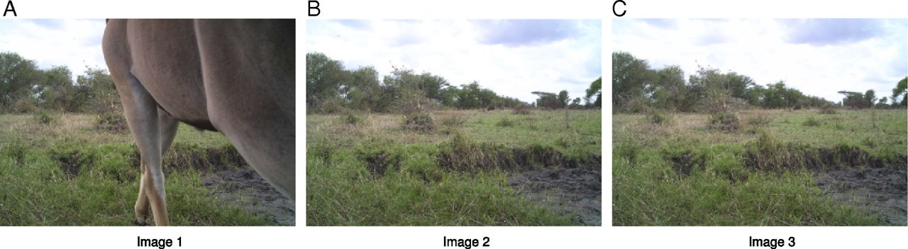
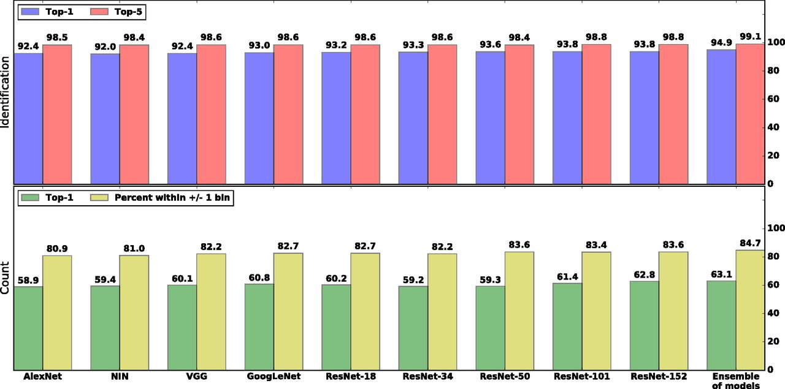
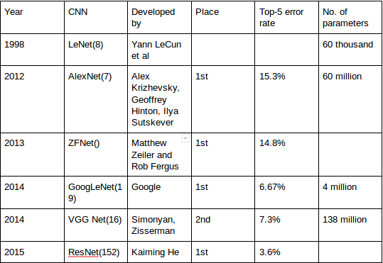
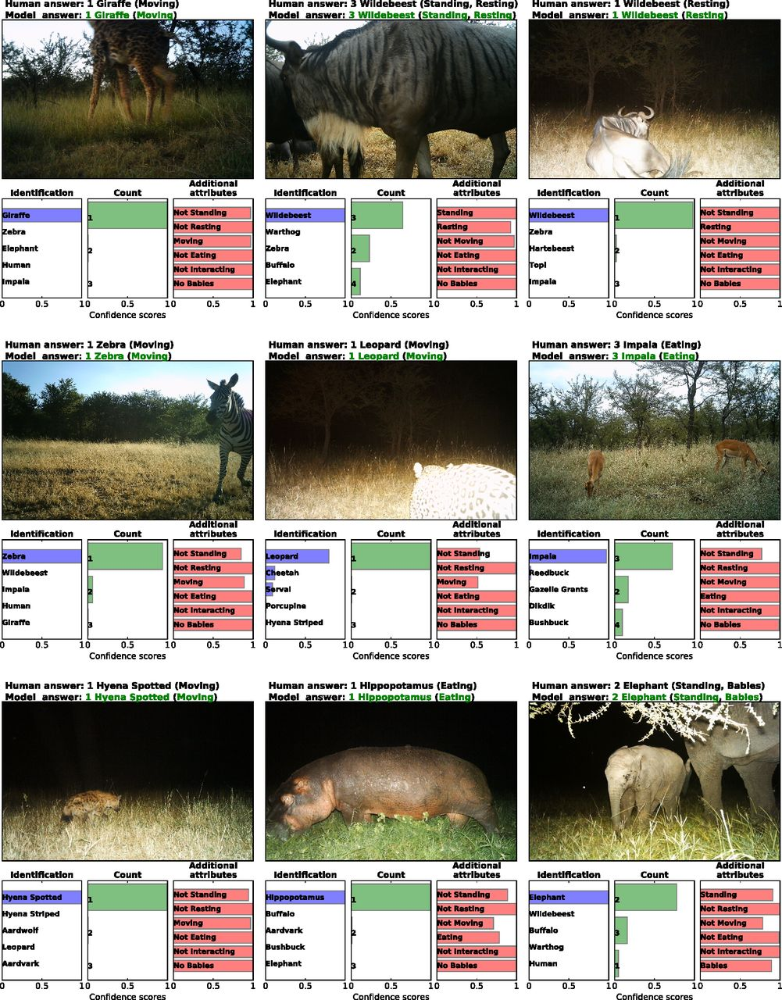
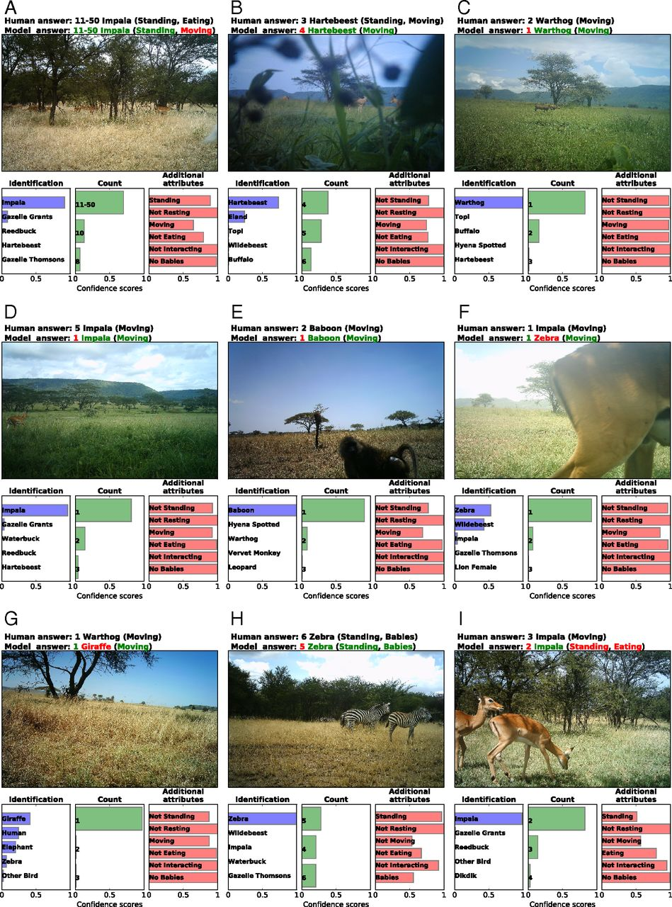

If we have precise and up-to-date data of wild animals, then we can study their ecosystems and transform those collection into "big data" sciences.
They use motion sensor "Camera traps" to take wildlife pictures. However, describing the information from these images is an expensive and time-consuming task, if we do it manually.
This model uses deep learning technique to extract information about these wild animals from pictures automatically. They train deep convolutional neural networks (deep CNNs) to identify, count, and describe the behaviors of 48 species in the 3.2-million-image Snapshot Serengeti dataset. Accuracy of this neural network to identify animals is over 94%.
More importantly, if this system classifies images about which it is confident, then it can identify animal for 99.3% of the data with the accuracy of 96.6%, which is same as a human effort for identification.
This system saves more than 8.4 years (at 40 hours per week) of human labeling effort (i.e. over 17,000 hours) on this 3.2-million-image dataset.
Efficiency of this technique could help us to collect the accurate information about animals in the wild.

Machine Learning
Machine learning enables computers to solve tasks without being explicitly programed to solve them.
State-of-the-art methods teach machines via supervised learning (i.e., by showing them correct pairs of inputs and outputs).
For example, when classifying images, the machine is trained
with many pairs of images and their corresponding labels, where
the image is the input and its correct label (e.g., “buffalo”) is the
output.

Deep Learning.
Deep learning allows computers to automatically extract multiple levels of abstraction from raw data.
This model uses deep convolutional neural networks (deep CNNs) which is a class of deep neural networks (DNNs), most commonly applied to analyzing visual imagery.
In CNNs, each layer of neurons (to be “deep,” three or more layers) uses convolutional operations to extract information from overlapping small regions coming from the previous layers.
For classification, the final layer of a DNN is usually a softmax function, with an output between 0 and 1 per class and with all of the class outputs summing to 1.
These outputs gives estimated probability of the image belonging in a certain class, and higher probability means DNNs is more confident about image being in that class.
DNNs have dramatically improved
the state of the art in many challenging problems including
speech recognition, machine translation, image
recognition, and playing Atari games.
There have been many attempts to automatically identify animals in camera-trap images; however, many relied on
hand-designed features to detect animals, or were applied to small datasets (e.g., only a few thousand images).
In contrast, this model uses deep learning on the world’s largest dataset of wild animals (i.e., the SS dataset) to detect, count, and describe animals automatically.
Swinnen et al. tried hand-designed features to classify animals. They attempted to distinguish the camera-trap recordings that do not contain animals or the target species of interest by detecting the low-level pixel changes
between frames.
Another hand-designed attempt was from Yu et al., who extracted the features with sparse coding spatial pyramid matching and used a linear support vector machine to classify the images with 82% accuracy.
However, this technique requires manual cropping of the images, which requires substantial human effort.
Several recent works applied deep learning to classify camera-trap images.
Chen et al. used CNNs to fully automate animal identification, but on a dataset of ∼20,000 images and 20 classes, which is of much smaller scale than this system explore and accuracy was 38%.
Similarly, Gomez et al. also applied DNNs to distinguish birds and mammals in a small dataset of 1,572 images and to distinguish two mammal sets in a dataset of 2,597 images.
The closest work to this model is Gomez et al., who also evaluate DNNs on the SS dataset: They perform only the species identification task, whereas this system also attempt to count animals,describe their behavior.
On the species-identification task, this model performed at 92.0% for best network vs. ∼57% for their best network.
Gomez et al only trained networks on a simplified version of the full 48-class SS dataset.
They classified only 26 classes of animals and removed the 22 classes that have the fewest images from the full
dataset. Here, this system instead performed on all 48 classes, as the ultimate goal of this research is to automate as much of the labeling effort as possible.
The SS project is the world’s largest camera-trap project published to date, with 225 camera traps running continuously in Serengeti National Park, Tanzania, since 2011.
The camera takes a set of pictures (usually three) when detects movement of a nearby animal. Each set of pictures is referred to as a capture event.
The public dataset used in this work contains 1.2 million capture events (3.2 million images) of 48 different species. Nearly 28,000 registered and 40,000 unregistered volunteer citizen-scientists have labeled 1.2 million SS capture events.
For each image set, multiple users label the species, number of individuals, various behaviors (i.e., standing, resting, moving, eating, or interacting). In total, 10.8 million classifications from volunteers have been recorded
for the entire dataset.
Swanson et al. developed a simple algorithm to aggregate these individual classifications into
a final set of labels, yielding a single classification for each image.
In this work, they focus on capture events that contain only one species; they thus removed events containingn more than one species from the dataset (1.2% of the events).
The training and test sets for the information extraction stage were formed from the 25% of images that were labeled as nonempty by humans.
The volunteers labeled entire capture events (not individual images). While this system focused on labeling individual images instead. Importantly, using individual images resulted in higher accuracy because it allowed three times more labeled training examples.
However, the fact that they took the labels for each capture event and assigned them to all of the individual images in that event introduced noise into the training process. For example, a capture event may have had one image with animals, but the remaining images empty. Assigning a species label to all these images added some noise that machine learning models had to overcome.
If there are overly similar images in the training and test sets, models can just memorize the examples and then do not generalize well to dissimilar images. To avoid this problem, they put entire capture events (which contain similar images) into either the training or test set.
From a total of 301,400 capture events that contained an animal, they created a training set containing 284,000 capture events and two test sets.
The expertlabeled test set contains 3,800 capture events with species and counts labels. The volunteer-labeled test set contains 17,400 capture events labeled by volunteers, and it has labels for species, counts and behaviors.
The dataset contains images taken at day and at night, but this had little effect on performance.
architecture
Different DNNs have different architectures, meaning the type of layers they contain and the number, order, and size of those layers.
In this work, they tested nine different modern architectures to find the highest-performing networks and to compare their results to those from Gomez et al. They only trained each model one time because doing so is computationally
expensive and because both theoretical and empirical evidence suggests that different DNNs trained with the same architecture, but initialized differently, often converge to similar performance levels.
architectures are: Alexset, NIN, VGG, GoogleNet, ResNet-18, ResNet-34, ResNet-50, ResNet-101, ResNet-152.
Task I: Detecting Images That Contain Animals.
For this task,
models took an image as input and output two probabilities
describing whether the image had an animal or not (i.e., binary
classification). They trained nine neural network models.
Because 75% of the SS dataset is labeled as empty, to avoid
imbalance between the empty and nonempty classes, we took all 25% (757,000) nonempty images and randomly selected 757,000
empty images. This dataset was then split into training and
test sets.
The training set contained 1.4 million images, and the test set
contained 105,000 images. Since the SS dataset contains labels
for only capture events (not individual images), they assigned the
label of each capture event to all of the images in that event. All
of the architectures achieved a classification accuracy of >95.8%
on this task. The VGG model achieved the best accuracy of
96.8%.

Task II: Identifying Species.
For this task, the corresponding output layer produced the probabilities of the input image being
one of the 48 possible species. As is traditional in the field of
computer vision, they reported top-1 accuracy (is the answer correct?) and top-5 accuracy (is the correct answer in the top-5
guesses by the network?). The latter is helpful in cases where
multiple things appear in a picture, even if the ground-truth
label in the dataset is only one of them. The top-5 score is also
of particular interest in this work because AI can be used to
help humans label data faster. In that context, a human can be shown an image and
the AI’s top-5 guesses. As they report below, our best techniques
identified the correct animal in the top-5 list 99.1% of the time.
Task III: Counting Animals.
There are many different approaches
for counting objects in images by deep learning, but
nearly all of them require labels for bounding boxes around different objects in the image. Because this kind of information is
not readily available in the SS dataset, they treated animal counting as a classification problem and left more advanced methods
for future work. In other words, instead of actually counting animals in the image, we assigned the image to one of the 12 possible
bins; each represented 1, 2, 3, 4, 5, 6, 7, 8, 9, 10, 11–50, or +51
individuals, respectively.
Task IV: Additional Attributes.
The SS dataset contains labels
for six additional attributes: standing, resting, moving, eating,
interacting. Because
these attributes are not mutually exclusive, this task is a multilabel classification problem.
A traditional approach for multilabel classification is to transform the task into a set of binary
classification tasks. They did so by having, for each
additional attribute, one two-neuron softmax output layer that
predicted the probability of that behavior existing (or not) in the
image.
The expert-labeled test set does not contain labels for these
additional attributes, so they used the majority vote among the
volunteer labels as the ground truth label for each attribute.
They counted an output correct if the prediction of the model
for that attribute was >50% and matched the ground-truth
label.

For task I, detecting images that contain
animals, we did not have expert-provided labels and thus did
not know the accuracy of the human volunteers, so they assumed
it to be the same 96.6% accuracy as on the animal identification task (task II). Because the VGG model’s accuracy is
higher than the volunteers’, we can automatically process 75%
of the data (because 75% of the images are empty) at humanlevel accuracy.
For task II, identifying species, thresholding at
43% confidence enabled them to automatically process 97.2% of
the remaining 25% of the data at human-level accuracy. Therefore, fully automated system operated at 96.6% accuracy on
75% × 100% + 25% × 97.2% = 99.3% of the data.
Applying the
same procedure to task III, counting animals, human volunteers
were 90.0% accurate, and to match them, they thresholded at 79%.
As a result, we can automatically count 44.5% of the nonempty
images and therefore 75% × 100% + 25% × 44.5% = 86.1% of
the data.
Note that to manually label ∼5.5 million images, nearly 30,000
SS volunteers have donated ∼14.6 y of 40-h-a-week effort.
Based on these statistics, this current automatic identification
system would save an estimated 8.4 y of 40-h-per-week human
labeling effort (> 17,000 h) for 99.3% of the 3.2 million images
in our dataset.

Source: medium.com

Shown are nine images the ResNet-152 model labeled correctly

Shown are nine images the ResNet-152 model labeled incorrectly
-
The first is studying the actual time savings and effects on accuracy of a system hybridizing DNNs and teams of human volunteer labelers. Time savings should come from three sources: automatically filtering empty images, accepting automatically extracted information
from images for which the network is highly confident in, and
by providing human labelers with a sorted list of suggestions
from the model so they can quickly select the correct species,
counts, and descriptions. However, the actual gains seen in practice need to be quantified. Additionally, the effect of such a
hybrid system on human accuracy needs to be studied. Accuracy
could be hurt if humans are more likely to accept incorrect suggestions from DNNs, but could also be improved if the model
suggests information that humans may not have thought to consider.
-
A second, but related, promising direction is studying
active learning (60, 61), a virtuous cycle in which humans label
only the images in which the network is not confident, and then
those images are added to the dataset, the network is retrained,
and the process repeats
-
The third is automatically handling multispecies images, which we removed for simplicity. While our
current trained pipeline can be applied to all images, for images
with multiple species, it provides only one species label. In 97.5%
of images, it correctly listed one of the species present, providing
useful information, but the impact of missing the other species
should be kept in mind and will depend on the use case. However, one could train networks to list multiple species via a variety
of more sophisticated deep-learning techniques (47, 62, 63), a
profitable area for future research.
Question: From where researcher have taken the dataset to perform the operation?
Answer: SS project, the world’s largest camera-trap
project published to date, with 225 camera traps running continuously in Serengeti National Park, Tanzania, since 2011.
Question: How many DNNs they have used for the project?
Answer: 9. Alexset, NIN, VGG, GoogleNet, ResNet-18, ResNet-34, ResNet-50, ResNet-101, ResNet-152